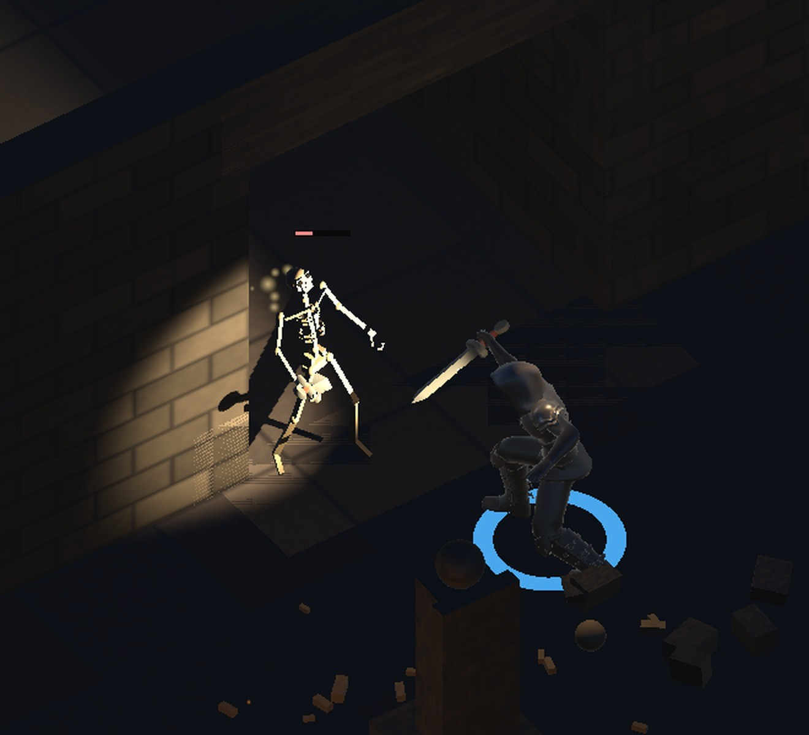

地城迴響 · 打擊感
揮刀「慢」的主因是攻擊期間不能移動的那 0.45 秒， 不是動作本身的速度。所以改的不只一個數字。

| 參數 | 舊 | 新 | 為什麼 |
|---|---|---|---|
| 攻擊硬直 | 0.45 s | 0.24 s | 戰鬥中六成時間不能動，那個凍結感比動作快慢更明顯 |
| 傷害落點 | 0.22 s | 0.12 s | 按下到見血的延遲＝鈍 |
| 攻擊冷卻 | 0.75 s | 0.50 s | 1.33 刀/秒 → 2.0 刀/秒 |
| 揮刀播放速度 | 1.0× | 1.5× | 硬直縮短但動畫照原速，會像動作被切斷 |
| 玩家移速 | 2.9 | 3.7 | 舊值要走 4.5 秒才跨過畫面高度 |
| 敵人移速 | 1.5 | 1.85 | 玩家變快，敵人不跟著提會變成無腦風箏 |
面板上的「速」從 2.55 變成 3.26（基礎值乘上戰士板甲的減速）， 這是移速確實生效的直接證據。
抓這張截圖失敗了兩次，兩次都是驗證方法的問題。
第一次：連拍 14 張全是空的。後來放大才看到角色早就清完房間、站在出口前 ——沒有敵人當然沒有命中。我在戰鬥結束後才開始拍。
第二次：偵測器回報「火花像素 121 個」，看起來很成功。 但那些暖黃像素是被錐光照亮的骷髏和火把——骨頭是骨白色， 正好落在我設的火花色範圍內。指標在量錯的東西。
第三次改成「小而孤立的亮點」（四鄰域都暗才算），並且重開遊戲、 在戰鬥進行中連拍 24 張，才抓到上面那一幀。
有一半我驗不到，先說清楚。打擊感是連續的體感，靜態截圖能證明的只有 「火花有出現」這類離散事件。「變快了」「有沒有比較爽」要上手才知道 ——那部分我不打算假裝驗過了。